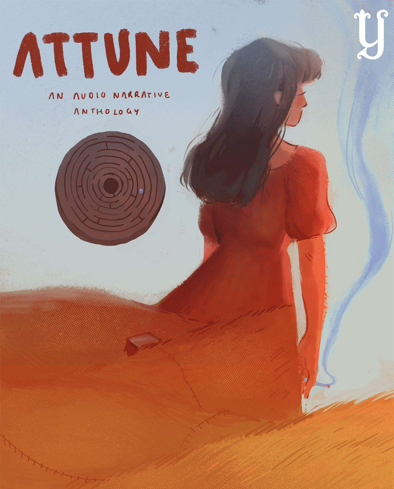

ATTUNE

Attune is an audio anthology at the Yale Daily News which produces student written short stories, plays, and poetry, featuring voice talent and original soundtracks by both Yale students and alumni.
My involvement:
- pitched series concept to desk editor, proposed naming and visual identity, recruited founding team
- created semester-long production timelines, guidelines for remote recording process
- oversaw equipment loans
- established a team process for reviewing and approving written works, voice recordings, music compositions
- created and carried out training plans to onboard ydn heelers as producers and sound engineers
- directed synchronous rehearsals and recordings
Some promo posters created by Alice Mao (left) and Dora Guo (right), for episodes 3 and 6 respectively.


Episodes I hosted:
Another episode in which I sound engineered the second piece: